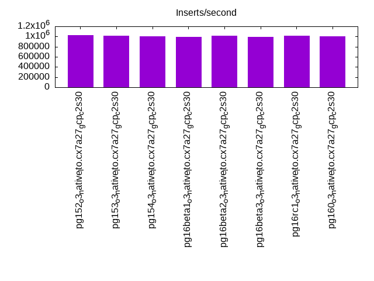

This is a report for the insert benchmark with 160M docs and 8 client(s). It is generated by scripts (bash, awk, sed) and Tufte might not be impressed. An overview of the insert benchmark is here and a short update is here. Below, by DBMS, I mean DBMS+version.config. An example is my8020.c10b40 where my means MySQL, 8020 is version 8.0.20 and c10b40 is the name for the configuration file.
The test server is a c2-standard-30 with 15 cores, hyperthreads disabled, 120G RAM and XFS with SW RAID 0 across 4 NVMe SSD. The benchmark was run with 8 clients and there were 1 or 3 connections per client (1 for queries or inserts without rate limits, 1+1 for rate limited inserts+deletes). It uses 8 tables, 1 per client. It loads 20M rows per table without secondary indexes, creates secondary indexes, then inserts 300M rows per table with a delete per insert to avoid growing the table. It then does 3 read+write tests for 7200s each that do queries as fast as possible with 100, 500 and then 1000 inserts/second/client concurrent with the queries. There are also deletes to match the inserts and avoid growing the table. The database is cached by Postgres. Clients and the DBMS share one server. The per-database configs are in the per-database subdirectories here.
The tested DBMS are:
The numbers are inserts/s for l.i0 and l.i1, indexed docs (or rows) /s for l.x and queries/s for q*.2. The values are the average rate over the entire test for inserts (IPS) and queries (QPS). The range of values for IPS and QPS is split into 3 parts: bottom 25%, middle 50%, top 25%. Values in the bottom 25% have a red background, values in the top 25% have a green background and values in the middle have no color. A gray background is used for values that can be ignored because the DBMS did not sustain the target insert rate. Red backgrounds are not used when the minimum value is within 80% of the max value.
| dbms | l.i0 | l.x | l.i1 | q100.1 | q500.1 | q1000.1 |
|---|---|---|---|---|---|---|
| pg152_o3_native_lto.cx7a27_gcp_c2s30 | 1025641 | 2320290 | 240577 | 113260 | 109208 | 108046 |
| pg153_o3_native_lto.cx7a27_gcp_c2s30 | 1012658 | 2320290 | 225225 | 112255 | 108780 | 107108 |
| pg154_o3_native_lto.cx7a27_gcp_c2s30 | 1000000 | 2354412 | 228397 | 112526 | 109057 | 107912 |
| pg16beta1_o3_native_lto.cx7a27_gcp_c2s30 | 987654 | 2389552 | 237624 | 111648 | 109118 | 108317 |
| pg16beta2_o3_native_lto.cx7a27_gcp_c2s30 | 1012658 | 2389552 | 231080 | 113283 | 109922 | 109074 |
| pg16beta3_o3_native_lto.cx7a27_gcp_c2s30 | 993789 | 2389552 | 231481 | 112842 | 109647 | 108294 |
| pg16rc1_o3_native_lto.cx7a27_gcp_c2s30 | 1012658 | 2354412 | 231258 | 113090 | 109345 | 108139 |
| pg160_o3_native_lto.cx7a27_gcp_c2s30 | 1000000 | 2193151 | 224278 | 113084 | 110163 | 107879 |
This table has relative throughput, throughput for the DBMS relative to the DBMS in the first line, using the absolute throughput from the previous table. Values less than 0.95 have a yellow background. Values greater than 1.05 have a blue background.
| dbms | l.i0 | l.x | l.i1 | q100.1 | q500.1 | q1000.1 |
|---|---|---|---|---|---|---|
| pg152_o3_native_lto.cx7a27_gcp_c2s30 | 1.00 | 1.00 | 1.00 | 1.00 | 1.00 | 1.00 |
| pg153_o3_native_lto.cx7a27_gcp_c2s30 | 0.99 | 1.00 | 0.94 | 0.99 | 1.00 | 0.99 |
| pg154_o3_native_lto.cx7a27_gcp_c2s30 | 0.98 | 1.01 | 0.95 | 0.99 | 1.00 | 1.00 |
| pg16beta1_o3_native_lto.cx7a27_gcp_c2s30 | 0.96 | 1.03 | 0.99 | 0.99 | 1.00 | 1.00 |
| pg16beta2_o3_native_lto.cx7a27_gcp_c2s30 | 0.99 | 1.03 | 0.96 | 1.00 | 1.01 | 1.01 |
| pg16beta3_o3_native_lto.cx7a27_gcp_c2s30 | 0.97 | 1.03 | 0.96 | 1.00 | 1.00 | 1.00 |
| pg16rc1_o3_native_lto.cx7a27_gcp_c2s30 | 0.99 | 1.01 | 0.96 | 1.00 | 1.00 | 1.00 |
| pg160_o3_native_lto.cx7a27_gcp_c2s30 | 0.98 | 0.95 | 0.93 | 1.00 | 1.01 | 1.00 |
This lists the average rate of inserts/s for the tests that do inserts concurrent with queries. For such tests the query rate is listed in the table above. The read+write tests are setup so that the insert rate should match the target rate every second. Cells that are not at least 95% of the target have a red background to indicate a failure to satisfy the target.
| dbms | q100.1 | q500.1 | q1000.1 |
|---|---|---|---|
| pg152_o3_native_lto.cx7a27_gcp_c2s30 | 798 | 3991 | 7984 |
| pg153_o3_native_lto.cx7a27_gcp_c2s30 | 798 | 3992 | 7983 |
| pg154_o3_native_lto.cx7a27_gcp_c2s30 | 798 | 3992 | 7984 |
| pg16beta1_o3_native_lto.cx7a27_gcp_c2s30 | 798 | 3992 | 7983 |
| pg16beta2_o3_native_lto.cx7a27_gcp_c2s30 | 798 | 3991 | 7984 |
| pg16beta3_o3_native_lto.cx7a27_gcp_c2s30 | 798 | 3992 | 7983 |
| pg16rc1_o3_native_lto.cx7a27_gcp_c2s30 | 798 | 3992 | 7984 |
| pg160_o3_native_lto.cx7a27_gcp_c2s30 | 798 | 3991 | 7984 |
| target | 800 | 4000 | 8000 |
l.i0: load without secondary indexes. Graphs for performance per 1-second interval are here.
Average throughput:
Insert response time histogram: each cell has the percentage of responses that take <= the time in the header and max is the max response time in seconds. For the max column values in the top 25% of the range have a red background and in the bottom 25% of the range have a green background. The red background is not used when the min value is within 80% of the max value.
| dbms | 256us | 1ms | 4ms | 16ms | 64ms | 256ms | 1s | 4s | 16s | gt | max |
|---|---|---|---|---|---|---|---|---|---|---|---|
| pg152_o3_native_lto.cx7a27_gcp_c2s30 | 97.886 | 2.062 | 0.043 | 0.001 | 0.006 | 0.002 | 0.299 | ||||
| pg153_o3_native_lto.cx7a27_gcp_c2s30 | 97.944 | 2.002 | 0.043 | 0.002 | 0.008 | 0.001 | 0.274 | ||||
| pg154_o3_native_lto.cx7a27_gcp_c2s30 | 97.788 | 2.160 | 0.044 | 0.007 | 0.001 | 0.311 | |||||
| pg16beta1_o3_native_lto.cx7a27_gcp_c2s30 | 98.021 | 1.925 | 0.043 | nonzero | 0.010 | 0.001 | 0.332 | ||||
| pg16beta2_o3_native_lto.cx7a27_gcp_c2s30 | 98.200 | 1.746 | 0.044 | 0.002 | 0.007 | 0.001 | 0.726 | ||||
| pg16beta3_o3_native_lto.cx7a27_gcp_c2s30 | 98.140 | 1.805 | 0.046 | 0.002 | 0.004 | 0.002 | 0.286 | ||||
| pg16rc1_o3_native_lto.cx7a27_gcp_c2s30 | 98.256 | 1.691 | 0.045 | 0.001 | 0.007 | 0.201 | |||||
| pg160_o3_native_lto.cx7a27_gcp_c2s30 | 98.101 | 1.830 | 0.055 | 0.003 | 0.008 | 0.002 | 0.397 |
Performance metrics for the DBMS listed above. Some are normalized by throughput, others are not. Legend for results is here.
ips qps rps rmbps wps wmbps rpq rkbpq wpi wkbpi csps cpups cspq cpupq dbgb1 dbgb2 rss maxop p50 p99 tag 1025641 0 0 0.0 1003.5 334.3 0.000 0.000 0.001 0.334 85489 77.5 0.083 11 15.3 41.4 1.7 0.299 145242 38857 160m.pg152_o3_native_lto.cx7a27_gcp_c2s30 1012658 0 0 0.0 1000.2 335.3 0.000 0.000 0.001 0.339 85948 77.8 0.085 12 15.3 41.4 4.8 0.274 143745 53341 160m.pg153_o3_native_lto.cx7a27_gcp_c2s30 1000000 0 0 0.0 970.9 326.5 0.000 0.000 0.001 0.334 84913 76.5 0.085 11 15.3 41.4 5.3 0.311 141047 46550 160m.pg154_o3_native_lto.cx7a27_gcp_c2s30 987654 0 0 0.0 972.8 325.9 0.000 0.000 0.001 0.338 83564 77.1 0.085 12 15.3 41.4 1.7 0.332 140946 55459 160m.pg16beta1_o3_native_lto.cx7a27_gcp_c2s30 1012658 0 0 0.0 997.4 335.5 0.000 0.000 0.001 0.339 85279 77.9 0.084 12 15.3 41.4 1.7 0.726 143144 54940 160m.pg16beta2_o3_native_lto.cx7a27_gcp_c2s30 993789 0 0 0.0 972.3 326.2 0.000 0.000 0.001 0.336 84087 76.9 0.085 12 15.3 41.4 1.7 0.286 141041 63930 160m.pg16beta3_o3_native_lto.cx7a27_gcp_c2s30 1012658 0 0 0.0 1000.9 336.5 0.000 0.000 0.001 0.340 84990 78.2 0.084 12 15.3 41.4 1.7 0.201 143040 76143 160m.pg16rc1_o3_native_lto.cx7a27_gcp_c2s30 1000000 0 0 0.0 968.2 331.3 0.000 0.000 0.001 0.339 81914 76.6 0.082 11 15.3 41.4 1.4 0.397 142147 81512 160m.pg160_o3_native_lto.cx7a27_gcp_c2s30
l.x: create secondary indexes.
Average throughput:
Performance metrics for the DBMS listed above. Some are normalized by throughput, others are not. Legend for results is here.
ips qps rps rmbps wps wmbps rpq rkbpq wpi wkbpi csps cpups cspq cpupq dbgb1 dbgb2 rss maxop p50 p99 tag 2320290 0 0 0.0 882.2 399.2 0.000 0.000 0.000 0.176 7473 41.9 0.003 3 29.4 63.3 13.2 0.002 NA NA 160m.pg152_o3_native_lto.cx7a27_gcp_c2s30 2320290 0 0 0.0 888.0 401.5 0.000 0.000 0.000 0.177 7643 41.9 0.003 3 29.4 63.3 13.2 0.002 NA NA 160m.pg153_o3_native_lto.cx7a27_gcp_c2s30 2354412 0 0 0.0 903.1 405.5 0.000 0.000 0.000 0.176 7981 41.4 0.003 3 29.4 63.4 13.2 0.002 NA NA 160m.pg154_o3_native_lto.cx7a27_gcp_c2s30 2389552 0 0 0.0 941.8 417.7 0.000 0.000 0.000 0.179 8339 41.1 0.003 3 29.4 63.4 13.2 0.002 NA NA 160m.pg16beta1_o3_native_lto.cx7a27_gcp_c2s30 2389552 0 0 0.0 968.8 426.8 0.000 0.000 0.000 0.183 7975 40.7 0.003 3 29.4 63.4 13.2 0.002 NA NA 160m.pg16beta2_o3_native_lto.cx7a27_gcp_c2s30 2389552 0 0 0.0 946.6 415.2 0.000 0.000 0.000 0.178 8347 41.2 0.003 3 29.4 63.4 13.2 0.002 NA NA 160m.pg16beta3_o3_native_lto.cx7a27_gcp_c2s30 2354412 0 0 0.0 934.2 413.8 0.000 0.000 0.000 0.180 7090 41.3 0.003 3 29.4 63.3 13.2 0.002 NA NA 160m.pg16rc1_o3_native_lto.cx7a27_gcp_c2s30 2193151 0 0 0.0 871.6 387.2 0.000 0.000 0.000 0.181 7188 38.6 0.003 3 29.4 63.4 13.2 0.002 NA NA 160m.pg160_o3_native_lto.cx7a27_gcp_c2s30
l.i1: continue load after secondary indexes created. Graphs for performance per 1-second interval are here.
Average throughput:
Insert response time histogram: each cell has the percentage of responses that take <= the time in the header and max is the max response time in seconds. For the max column values in the top 25% of the range have a red background and in the bottom 25% of the range have a green background. The red background is not used when the min value is within 80% of the max value.
| dbms | 256us | 1ms | 4ms | 16ms | 64ms | 256ms | 1s | 4s | 16s | gt | max |
|---|---|---|---|---|---|---|---|---|---|---|---|
| pg152_o3_native_lto.cx7a27_gcp_c2s30 | 0.015 | 99.768 | 0.155 | 0.058 | 0.004 | nonzero | 0.385 | ||||
| pg153_o3_native_lto.cx7a27_gcp_c2s30 | 0.264 | 99.512 | 0.168 | 0.053 | 0.003 | nonzero | 0.911 | ||||
| pg154_o3_native_lto.cx7a27_gcp_c2s30 | 0.036 | 99.742 | 0.170 | 0.048 | 0.003 | nonzero | 0.335 | ||||
| pg16beta1_o3_native_lto.cx7a27_gcp_c2s30 | 0.248 | 99.526 | 0.164 | 0.058 | 0.004 | 0.218 | |||||
| pg16beta2_o3_native_lto.cx7a27_gcp_c2s30 | 0.252 | 99.527 | 0.164 | 0.054 | 0.003 | nonzero | 0.772 | ||||
| pg16beta3_o3_native_lto.cx7a27_gcp_c2s30 | 0.288 | 99.496 | 0.164 | 0.048 | 0.003 | 0.202 | |||||
| pg16rc1_o3_native_lto.cx7a27_gcp_c2s30 | 0.349 | 99.431 | 0.163 | 0.053 | 0.003 | 0.191 | |||||
| pg160_o3_native_lto.cx7a27_gcp_c2s30 | 0.392 | 99.390 | 0.168 | 0.046 | 0.003 | nonzero | 0.262 |
Delete response time histogram: each cell has the percentage of responses that take <= the time in the header and max is the max response time in seconds. For the max column values in the top 25% of the range have a red background and in the bottom 25% of the range have a green background. The red background is not used when the min value is within 80% of the max value.
| dbms | 256us | 1ms | 4ms | 16ms | 64ms | 256ms | 1s | 4s | 16s | gt | max |
|---|---|---|---|---|---|---|---|---|---|---|---|
| pg152_o3_native_lto.cx7a27_gcp_c2s30 | 78.178 | 8.165 | 11.483 | 2.153 | 0.018 | 0.002 | nonzero | 0.383 | |||
| pg153_o3_native_lto.cx7a27_gcp_c2s30 | 77.857 | 8.726 | 10.595 | 2.806 | 0.015 | 0.002 | nonzero | 0.697 | |||
| pg154_o3_native_lto.cx7a27_gcp_c2s30 | 78.645 | 7.580 | 10.625 | 3.132 | 0.016 | 0.002 | nonzero | 0.280 | |||
| pg16beta1_o3_native_lto.cx7a27_gcp_c2s30 | 76.510 | 9.534 | 11.945 | 1.992 | 0.017 | 0.002 | 0.219 | ||||
| pg16beta2_o3_native_lto.cx7a27_gcp_c2s30 | 78.345 | 8.067 | 10.740 | 2.829 | 0.018 | 0.002 | nonzero | 0.770 | |||
| pg16beta3_o3_native_lto.cx7a27_gcp_c2s30 | 78.202 | 7.923 | 11.219 | 2.636 | 0.017 | 0.002 | 0.230 | ||||
| pg16rc1_o3_native_lto.cx7a27_gcp_c2s30 | 78.159 | 7.970 | 11.051 | 2.801 | 0.017 | 0.002 | 0.243 | ||||
| pg160_o3_native_lto.cx7a27_gcp_c2s30 | 78.367 | 7.777 | 10.766 | 3.069 | 0.019 | 0.002 | nonzero | 0.262 |
Performance metrics for the DBMS listed above. Some are normalized by throughput, others are not. Legend for results is here.
ips qps rps rmbps wps wmbps rpq rkbpq wpi wkbpi csps cpups cspq cpupq dbgb1 dbgb2 rss maxop p50 p99 tag 240577 0 0 0.0 1146.5 187.5 0.000 0.000 0.005 0.798 93513 78.9 0.389 49 41.8 111.9 30.5 0.385 35117 6842 160m.pg152_o3_native_lto.cx7a27_gcp_c2s30 225225 0 0 0.0 1087.0 175.0 0.000 0.000 0.005 0.796 88071 75.2 0.391 50 42.1 112.1 29.4 0.911 34812 5094 160m.pg153_o3_native_lto.cx7a27_gcp_c2s30 228397 0 0 0.0 1086.1 176.8 0.000 0.000 0.005 0.793 88476 77.4 0.387 51 41.9 112.0 32.1 0.335 35124 5996 160m.pg154_o3_native_lto.cx7a27_gcp_c2s30 237624 0 0 0.0 1136.5 184.8 0.000 0.000 0.005 0.796 92527 76.8 0.389 48 41.8 111.9 24.5 0.218 34862 6797 160m.pg16beta1_o3_native_lto.cx7a27_gcp_c2s30 231080 0 0 0.0 1100.2 178.2 0.000 0.000 0.005 0.790 90916 76.7 0.393 50 41.9 112.0 19.4 0.772 35412 5096 160m.pg16beta2_o3_native_lto.cx7a27_gcp_c2s30 231481 0 0 0.0 1102.6 178.4 0.000 0.000 0.005 0.789 91011 76.3 0.393 49 41.9 111.9 25.9 0.202 35412 6193 160m.pg16beta3_o3_native_lto.cx7a27_gcp_c2s30 231258 0 0 0.0 1107.3 178.6 0.000 0.000 0.005 0.791 91150 76.4 0.394 50 41.8 111.9 29.5 0.191 35561 5194 160m.pg16rc1_o3_native_lto.cx7a27_gcp_c2s30 224278 0 0 0.0 1066.3 173.2 0.000 0.000 0.005 0.791 88176 74.5 0.393 50 41.8 111.9 27.8 0.262 35511 4845 160m.pg160_o3_native_lto.cx7a27_gcp_c2s30
q100.1: range queries with 100 insert/s per client. Graphs for performance per 1-second interval are here.
Average throughput:
Query response time histogram: each cell has the percentage of responses that take <= the time in the header and max is the max response time in seconds. For max values in the top 25% of the range have a red background and in the bottom 25% of the range have a green background. The red background is not used when the min value is within 80% of the max value.
| dbms | 256us | 1ms | 4ms | 16ms | 64ms | 256ms | 1s | 4s | 16s | gt | max |
|---|---|---|---|---|---|---|---|---|---|---|---|
| pg152_o3_native_lto.cx7a27_gcp_c2s30 | 99.997 | 0.003 | nonzero | nonzero | 0.008 | ||||||
| pg153_o3_native_lto.cx7a27_gcp_c2s30 | 99.996 | 0.003 | 0.001 | nonzero | 0.009 | ||||||
| pg154_o3_native_lto.cx7a27_gcp_c2s30 | 99.996 | 0.003 | 0.001 | nonzero | 0.010 | ||||||
| pg16beta1_o3_native_lto.cx7a27_gcp_c2s30 | 99.996 | 0.003 | 0.001 | nonzero | 0.010 | ||||||
| pg16beta2_o3_native_lto.cx7a27_gcp_c2s30 | 99.996 | 0.003 | 0.001 | nonzero | 0.009 | ||||||
| pg16beta3_o3_native_lto.cx7a27_gcp_c2s30 | 99.997 | 0.003 | 0.001 | nonzero | 0.008 | ||||||
| pg16rc1_o3_native_lto.cx7a27_gcp_c2s30 | 99.996 | 0.003 | 0.001 | nonzero | 0.006 | ||||||
| pg160_o3_native_lto.cx7a27_gcp_c2s30 | 99.996 | 0.003 | 0.001 | nonzero | 0.009 |
Insert response time histogram: each cell has the percentage of responses that take <= the time in the header and max is the max response time in seconds. For max values in the top 25% of the range have a red background and in the bottom 25% of the range have a green background. The red background is not used when the min value is within 80% of the max value.
| dbms | 256us | 1ms | 4ms | 16ms | 64ms | 256ms | 1s | 4s | 16s | gt | max |
|---|---|---|---|---|---|---|---|---|---|---|---|
| pg152_o3_native_lto.cx7a27_gcp_c2s30 | 99.921 | 0.079 | 0.013 | ||||||||
| pg153_o3_native_lto.cx7a27_gcp_c2s30 | 99.841 | 0.159 | 0.015 | ||||||||
| pg154_o3_native_lto.cx7a27_gcp_c2s30 | 99.852 | 0.148 | 0.012 | ||||||||
| pg16beta1_o3_native_lto.cx7a27_gcp_c2s30 | 99.878 | 0.122 | 0.013 | ||||||||
| pg16beta2_o3_native_lto.cx7a27_gcp_c2s30 | 99.810 | 0.190 | 0.012 | ||||||||
| pg16beta3_o3_native_lto.cx7a27_gcp_c2s30 | 99.869 | 0.131 | 0.012 | ||||||||
| pg16rc1_o3_native_lto.cx7a27_gcp_c2s30 | 99.872 | 0.128 | 0.001 | 0.019 | |||||||
| pg160_o3_native_lto.cx7a27_gcp_c2s30 | 99.736 | 0.264 | 0.010 |
Delete response time histogram: each cell has the percentage of responses that take <= the time in the header and max is the max response time in seconds. For max values in the top 25% of the range have a red background and in the bottom 25% of the range have a green background. The red background is not used when the min value is within 80% of the max value.
| dbms | 256us | 1ms | 4ms | 16ms | 64ms | 256ms | 1s | 4s | 16s | gt | max |
|---|---|---|---|---|---|---|---|---|---|---|---|
| pg152_o3_native_lto.cx7a27_gcp_c2s30 | 66.461 | 15.448 | 14.718 | 3.373 | 0.013 | ||||||
| pg153_o3_native_lto.cx7a27_gcp_c2s30 | 57.270 | 23.173 | 17.409 | 2.148 | 0.008 | ||||||
| pg154_o3_native_lto.cx7a27_gcp_c2s30 | 62.187 | 14.806 | 15.054 | 7.953 | 0.013 | ||||||
| pg16beta1_o3_native_lto.cx7a27_gcp_c2s30 | 55.911 | 20.905 | 21.876 | 1.307 | 0.008 | ||||||
| pg16beta2_o3_native_lto.cx7a27_gcp_c2s30 | 59.968 | 23.069 | 13.876 | 3.087 | 0.010 | ||||||
| pg16beta3_o3_native_lto.cx7a27_gcp_c2s30 | 65.770 | 22.024 | 9.612 | 2.594 | 0.009 | ||||||
| pg16rc1_o3_native_lto.cx7a27_gcp_c2s30 | 63.451 | 19.562 | 14.059 | 2.927 | 0.008 | ||||||
| pg160_o3_native_lto.cx7a27_gcp_c2s30 | 61.826 | 27.021 | 10.772 | 0.381 | 0.011 |
Performance metrics for the DBMS listed above. Some are normalized by throughput, others are not. Legend for results is here.
ips qps rps rmbps wps wmbps rpq rkbpq wpi wkbpi csps cpups cspq cpupq dbgb1 dbgb2 rss maxop p50 p99 tag 798 113260 0 0.0 319.3 10.6 0.000 0.000 0.400 13.567 431260 52.8 3.808 70 41.8 102.5 11.7 0.008 14289 14006 160m.pg152_o3_native_lto.cx7a27_gcp_c2s30 798 112255 0 0.0 377.2 11.2 0.000 0.000 0.473 14.394 427510 53.0 3.808 71 42.1 102.3 13.9 0.009 13985 13729 160m.pg153_o3_native_lto.cx7a27_gcp_c2s30 798 112526 0 0.0 316.0 10.7 0.000 0.000 0.396 13.738 428483 52.9 3.808 71 41.9 102.3 7.9 0.010 14065 13793 160m.pg154_o3_native_lto.cx7a27_gcp_c2s30 798 111648 0 0.0 378.4 11.4 0.000 0.000 0.474 14.586 425250 53.0 3.809 71 41.8 107.1 1.0 0.010 13953 13713 160m.pg16beta1_o3_native_lto.cx7a27_gcp_c2s30 798 113283 0 0.0 309.9 10.3 0.000 0.000 0.388 13.193 431512 52.9 3.809 70 41.9 107.1 11.3 0.009 13990 13697 160m.pg16beta2_o3_native_lto.cx7a27_gcp_c2s30 798 112842 0 0.0 313.9 10.4 0.000 0.000 0.393 13.357 429724 53.0 3.808 70 41.9 107.0 11.8 0.008 14129 13862 160m.pg16beta3_o3_native_lto.cx7a27_gcp_c2s30 798 113090 0 0.0 330.1 10.6 0.000 0.000 0.413 13.612 430612 53.0 3.808 70 41.8 107.1 7.3 0.006 14033 13777 160m.pg16rc1_o3_native_lto.cx7a27_gcp_c2s30 798 113084 0 0.0 341.1 10.5 0.000 0.000 0.427 13.472 430595 52.8 3.808 70 41.8 107.0 7.4 0.009 14049 13761 160m.pg160_o3_native_lto.cx7a27_gcp_c2s30
q500.1: range queries with 500 insert/s per client. Graphs for performance per 1-second interval are here.
Average throughput:
Query response time histogram: each cell has the percentage of responses that take <= the time in the header and max is the max response time in seconds. For max values in the top 25% of the range have a red background and in the bottom 25% of the range have a green background. The red background is not used when the min value is within 80% of the max value.
| dbms | 256us | 1ms | 4ms | 16ms | 64ms | 256ms | 1s | 4s | 16s | gt | max |
|---|---|---|---|---|---|---|---|---|---|---|---|
| pg152_o3_native_lto.cx7a27_gcp_c2s30 | 99.989 | 0.008 | 0.003 | nonzero | nonzero | 0.024 | |||||
| pg153_o3_native_lto.cx7a27_gcp_c2s30 | 99.988 | 0.008 | 0.004 | nonzero | nonzero | nonzero | 0.073 | ||||
| pg154_o3_native_lto.cx7a27_gcp_c2s30 | 99.989 | 0.008 | 0.003 | nonzero | nonzero | 0.069 | |||||
| pg16beta1_o3_native_lto.cx7a27_gcp_c2s30 | 99.988 | 0.008 | 0.004 | nonzero | nonzero | 0.077 | |||||
| pg16beta2_o3_native_lto.cx7a27_gcp_c2s30 | 99.987 | 0.009 | 0.004 | nonzero | nonzero | nonzero | 0.075 | ||||
| pg16beta3_o3_native_lto.cx7a27_gcp_c2s30 | 99.987 | 0.009 | 0.004 | nonzero | nonzero | 0.016 | |||||
| pg16rc1_o3_native_lto.cx7a27_gcp_c2s30 | 99.989 | 0.008 | 0.004 | nonzero | nonzero | nonzero | 0.066 | ||||
| pg160_o3_native_lto.cx7a27_gcp_c2s30 | 99.985 | 0.010 | 0.005 | nonzero | nonzero | 0.024 |
Insert response time histogram: each cell has the percentage of responses that take <= the time in the header and max is the max response time in seconds. For max values in the top 25% of the range have a red background and in the bottom 25% of the range have a green background. The red background is not used when the min value is within 80% of the max value.
| dbms | 256us | 1ms | 4ms | 16ms | 64ms | 256ms | 1s | 4s | 16s | gt | max |
|---|---|---|---|---|---|---|---|---|---|---|---|
| pg152_o3_native_lto.cx7a27_gcp_c2s30 | 99.932 | 0.068 | 0.016 | ||||||||
| pg153_o3_native_lto.cx7a27_gcp_c2s30 | 99.933 | 0.066 | 0.001 | 0.018 | |||||||
| pg154_o3_native_lto.cx7a27_gcp_c2s30 | 99.929 | 0.070 | nonzero | 0.019 | |||||||
| pg16beta1_o3_native_lto.cx7a27_gcp_c2s30 | 99.949 | 0.051 | nonzero | 0.018 | |||||||
| pg16beta2_o3_native_lto.cx7a27_gcp_c2s30 | 99.885 | 0.114 | 0.001 | 0.018 | |||||||
| pg16beta3_o3_native_lto.cx7a27_gcp_c2s30 | 99.901 | 0.097 | 0.001 | 0.018 | |||||||
| pg16rc1_o3_native_lto.cx7a27_gcp_c2s30 | 99.956 | 0.044 | nonzero | 0.016 | |||||||
| pg160_o3_native_lto.cx7a27_gcp_c2s30 | 99.806 | 0.192 | 0.001 | 0.023 |
Delete response time histogram: each cell has the percentage of responses that take <= the time in the header and max is the max response time in seconds. For max values in the top 25% of the range have a red background and in the bottom 25% of the range have a green background. The red background is not used when the min value is within 80% of the max value.
| dbms | 256us | 1ms | 4ms | 16ms | 64ms | 256ms | 1s | 4s | 16s | gt | max |
|---|---|---|---|---|---|---|---|---|---|---|---|
| pg152_o3_native_lto.cx7a27_gcp_c2s30 | 77.972 | 10.617 | 6.624 | 4.786 | nonzero | 0.021 | |||||
| pg153_o3_native_lto.cx7a27_gcp_c2s30 | 75.045 | 13.935 | 8.351 | 2.668 | nonzero | 0.018 | |||||
| pg154_o3_native_lto.cx7a27_gcp_c2s30 | 77.011 | 7.749 | 11.480 | 3.759 | nonzero | 0.019 | |||||
| pg16beta1_o3_native_lto.cx7a27_gcp_c2s30 | 75.641 | 12.624 | 11.315 | 0.420 | nonzero | 0.016 | |||||
| pg16beta2_o3_native_lto.cx7a27_gcp_c2s30 | 76.003 | 12.478 | 8.715 | 2.804 | nonzero | 0.018 | |||||
| pg16beta3_o3_native_lto.cx7a27_gcp_c2s30 | 77.294 | 10.217 | 7.004 | 5.485 | 0.001 | 0.018 | |||||
| pg16rc1_o3_native_lto.cx7a27_gcp_c2s30 | 76.810 | 10.494 | 9.432 | 3.264 | nonzero | 0.017 | |||||
| pg160_o3_native_lto.cx7a27_gcp_c2s30 | 75.595 | 12.526 | 7.594 | 4.284 | 0.002 | 0.022 |
Performance metrics for the DBMS listed above. Some are normalized by throughput, others are not. Legend for results is here.
ips qps rps rmbps wps wmbps rpq rkbpq wpi wkbpi csps cpups cspq cpupq dbgb1 dbgb2 rss maxop p50 p99 tag 3991 109208 0 0.0 247.4 14.9 0.000 0.000 0.062 3.833 416335 53.9 3.812 74 41.8 89.6 28.1 0.024 13718 11512 160m.pg152_o3_native_lto.cx7a27_gcp_c2s30 3992 108780 0 0.0 245.8 15.3 0.000 0.000 0.062 3.915 414611 53.9 3.811 74 42.0 89.6 22.6 0.073 13777 11459 160m.pg153_o3_native_lto.cx7a27_gcp_c2s30 3992 109057 0 0.0 248.2 15.0 0.000 0.000 0.062 3.840 415741 54.0 3.812 74 41.9 89.5 18.0 0.069 13793 11683 160m.pg154_o3_native_lto.cx7a27_gcp_c2s30 3992 109118 0 0.0 222.3 15.6 0.000 0.000 0.056 3.989 416154 53.8 3.814 74 41.8 92.0 15.8 0.077 13617 11475 160m.pg16beta1_o3_native_lto.cx7a27_gcp_c2s30 3991 109922 0 0.0 215.1 15.1 0.000 0.000 0.054 3.874 419018 53.8 3.812 73 41.8 92.4 0.8 0.075 13681 11539 160m.pg16beta2_o3_native_lto.cx7a27_gcp_c2s30 3992 109647 0 0.0 210.2 15.2 0.000 0.000 0.053 3.897 417852 53.9 3.811 74 41.9 92.3 13.2 0.016 13606 11332 160m.pg16beta3_o3_native_lto.cx7a27_gcp_c2s30 3992 109345 0 0.0 198.6 15.2 0.000 0.000 0.050 3.904 417056 53.9 3.814 74 41.8 92.3 17.8 0.066 13654 11332 160m.pg16rc1_o3_native_lto.cx7a27_gcp_c2s30 3991 110163 0 0.0 204.2 15.3 0.000 0.000 0.051 3.916 419749 53.8 3.810 73 41.8 92.2 31.2 0.024 13857 11498 160m.pg160_o3_native_lto.cx7a27_gcp_c2s30
q1000.1: range queries with 1000 insert/s per client. Graphs for performance per 1-second interval are here.
Average throughput:
Query response time histogram: each cell has the percentage of responses that take <= the time in the header and max is the max response time in seconds. For max values in the top 25% of the range have a red background and in the bottom 25% of the range have a green background. The red background is not used when the min value is within 80% of the max value.
| dbms | 256us | 1ms | 4ms | 16ms | 64ms | 256ms | 1s | 4s | 16s | gt | max |
|---|---|---|---|---|---|---|---|---|---|---|---|
| pg152_o3_native_lto.cx7a27_gcp_c2s30 | 99.960 | 0.031 | 0.009 | nonzero | nonzero | nonzero | 0.092 | ||||
| pg153_o3_native_lto.cx7a27_gcp_c2s30 | 99.956 | 0.035 | 0.009 | nonzero | nonzero | nonzero | 0.096 | ||||
| pg154_o3_native_lto.cx7a27_gcp_c2s30 | 99.963 | 0.029 | 0.008 | nonzero | nonzero | nonzero | 0.094 | ||||
| pg16beta1_o3_native_lto.cx7a27_gcp_c2s30 | 99.950 | 0.039 | 0.011 | nonzero | nonzero | nonzero | 0.089 | ||||
| pg16beta2_o3_native_lto.cx7a27_gcp_c2s30 | 99.959 | 0.032 | 0.009 | nonzero | nonzero | 0.023 | |||||
| pg16beta3_o3_native_lto.cx7a27_gcp_c2s30 | 99.959 | 0.032 | 0.009 | nonzero | nonzero | 0.021 | |||||
| pg16rc1_o3_native_lto.cx7a27_gcp_c2s30 | 99.954 | 0.035 | 0.011 | nonzero | nonzero | nonzero | 0.085 | ||||
| pg160_o3_native_lto.cx7a27_gcp_c2s30 | 99.964 | 0.028 | 0.008 | nonzero | nonzero | nonzero | 0.081 |
Insert response time histogram: each cell has the percentage of responses that take <= the time in the header and max is the max response time in seconds. For max values in the top 25% of the range have a red background and in the bottom 25% of the range have a green background. The red background is not used when the min value is within 80% of the max value.
| dbms | 256us | 1ms | 4ms | 16ms | 64ms | 256ms | 1s | 4s | 16s | gt | max |
|---|---|---|---|---|---|---|---|---|---|---|---|
| pg152_o3_native_lto.cx7a27_gcp_c2s30 | 99.755 | 0.240 | 0.004 | 0.061 | |||||||
| pg153_o3_native_lto.cx7a27_gcp_c2s30 | 99.534 | 0.456 | 0.009 | 0.030 | |||||||
| pg154_o3_native_lto.cx7a27_gcp_c2s30 | 99.721 | 0.272 | 0.007 | 0.031 | |||||||
| pg16beta1_o3_native_lto.cx7a27_gcp_c2s30 | 99.532 | 0.455 | 0.012 | 0.027 | |||||||
| pg16beta2_o3_native_lto.cx7a27_gcp_c2s30 | 99.730 | 0.263 | 0.006 | 0.027 | |||||||
| pg16beta3_o3_native_lto.cx7a27_gcp_c2s30 | 99.644 | 0.344 | 0.012 | 0.036 | |||||||
| pg16rc1_o3_native_lto.cx7a27_gcp_c2s30 | 99.602 | 0.389 | 0.009 | 0.032 | |||||||
| pg160_o3_native_lto.cx7a27_gcp_c2s30 | 99.815 | 0.181 | 0.003 | 0.024 |
Delete response time histogram: each cell has the percentage of responses that take <= the time in the header and max is the max response time in seconds. For max values in the top 25% of the range have a red background and in the bottom 25% of the range have a green background. The red background is not used when the min value is within 80% of the max value.
| dbms | 256us | 1ms | 4ms | 16ms | 64ms | 256ms | 1s | 4s | 16s | gt | max |
|---|---|---|---|---|---|---|---|---|---|---|---|
| pg152_o3_native_lto.cx7a27_gcp_c2s30 | 76.981 | 11.924 | 9.970 | 1.124 | 0.001 | 0.060 | |||||
| pg153_o3_native_lto.cx7a27_gcp_c2s30 | 76.589 | 14.041 | 8.041 | 1.327 | 0.002 | 0.024 | |||||
| pg154_o3_native_lto.cx7a27_gcp_c2s30 | 77.327 | 9.221 | 12.477 | 0.973 | 0.002 | 0.023 | |||||
| pg16beta1_o3_native_lto.cx7a27_gcp_c2s30 | 76.883 | 16.692 | 6.220 | 0.202 | 0.003 | 0.025 | |||||
| pg16beta2_o3_native_lto.cx7a27_gcp_c2s30 | 77.667 | 13.049 | 8.395 | 0.888 | 0.002 | 0.024 | |||||
| pg16beta3_o3_native_lto.cx7a27_gcp_c2s30 | 76.936 | 10.507 | 9.464 | 3.090 | 0.002 | 0.024 | |||||
| pg16rc1_o3_native_lto.cx7a27_gcp_c2s30 | 76.782 | 11.396 | 10.880 | 0.937 | 0.004 | 0.029 | |||||
| pg160_o3_native_lto.cx7a27_gcp_c2s30 | 78.017 | 11.621 | 7.932 | 2.430 | nonzero | 0.023 |
Performance metrics for the DBMS listed above. Some are normalized by throughput, others are not. Legend for results is here.
ips qps rps rmbps wps wmbps rpq rkbpq wpi wkbpi csps cpups cspq cpupq dbgb1 dbgb2 rss maxop p50 p99 tag 7984 108046 0 0.0 187.8 16.9 0.000 0.000 0.024 2.164 411635 54.9 3.810 76 41.6 83.6 22.5 0.092 13521 11348 160m.pg152_o3_native_lto.cx7a27_gcp_c2s30 7983 107108 0 0.0 192.2 16.5 0.000 0.000 0.024 2.120 407910 54.9 3.808 77 41.8 83.8 17.7 0.096 13537 11290 160m.pg153_o3_native_lto.cx7a27_gcp_c2s30 7984 107912 0 0.0 187.4 16.8 0.000 0.000 0.023 2.155 411102 54.9 3.810 76 41.7 83.6 18.1 0.094 13553 11427 160m.pg154_o3_native_lto.cx7a27_gcp_c2s30 7983 108317 0 0.0 183.5 16.6 0.000 0.000 0.023 2.132 412010 54.7 3.804 76 41.6 84.8 24.2 0.089 13441 11284 160m.pg16beta1_o3_native_lto.cx7a27_gcp_c2s30 7984 109074 0 0.0 186.0 16.5 0.000 0.000 0.023 2.122 415538 54.8 3.810 75 41.9 85.4 6.7 0.023 13553 11380 160m.pg16beta2_o3_native_lto.cx7a27_gcp_c2s30 7983 108294 0 0.0 185.8 16.6 0.000 0.000 0.023 2.125 412394 54.9 3.808 76 41.9 85.4 12.9 0.021 13457 11290 160m.pg16beta3_o3_native_lto.cx7a27_gcp_c2s30 7984 108139 0 0.0 187.7 16.5 0.000 0.000 0.024 2.119 411659 54.7 3.807 76 41.6 85.1 28.1 0.085 13526 11380 160m.pg16rc1_o3_native_lto.cx7a27_gcp_c2s30 7984 107879 0 0.0 187.8 16.7 0.000 0.000 0.024 2.138 411415 54.9 3.814 76 41.7 85.1 28.3 0.081 13505 11364 160m.pg160_o3_native_lto.cx7a27_gcp_c2s30
l.i0: load without secondary indexes
Performance metrics for all DBMS, not just the ones listed above. Some are normalized by throughput, others are not. Legend for results is here.
ips qps rps rmbps wps wmbps rpq rkbpq wpi wkbpi csps cpups cspq cpupq dbgb1 dbgb2 rss maxop p50 p99 tag 1025641 0 0 0.0 1003.5 334.3 0.000 0.000 0.001 0.334 85489 77.5 0.083 11 15.3 41.4 1.7 0.299 145242 38857 160m.pg152_o3_native_lto.cx7a27_gcp_c2s30 1012658 0 0 0.0 1000.2 335.3 0.000 0.000 0.001 0.339 85948 77.8 0.085 12 15.3 41.4 4.8 0.274 143745 53341 160m.pg153_o3_native_lto.cx7a27_gcp_c2s30 1000000 0 0 0.0 970.9 326.5 0.000 0.000 0.001 0.334 84913 76.5 0.085 11 15.3 41.4 5.3 0.311 141047 46550 160m.pg154_o3_native_lto.cx7a27_gcp_c2s30 987654 0 0 0.0 972.8 325.9 0.000 0.000 0.001 0.338 83564 77.1 0.085 12 15.3 41.4 1.7 0.332 140946 55459 160m.pg16beta1_o3_native_lto.cx7a27_gcp_c2s30 1012658 0 0 0.0 997.4 335.5 0.000 0.000 0.001 0.339 85279 77.9 0.084 12 15.3 41.4 1.7 0.726 143144 54940 160m.pg16beta2_o3_native_lto.cx7a27_gcp_c2s30 993789 0 0 0.0 972.3 326.2 0.000 0.000 0.001 0.336 84087 76.9 0.085 12 15.3 41.4 1.7 0.286 141041 63930 160m.pg16beta3_o3_native_lto.cx7a27_gcp_c2s30 1012658 0 0 0.0 1000.9 336.5 0.000 0.000 0.001 0.340 84990 78.2 0.084 12 15.3 41.4 1.7 0.201 143040 76143 160m.pg16rc1_o3_native_lto.cx7a27_gcp_c2s30 1000000 0 0 0.0 968.2 331.3 0.000 0.000 0.001 0.339 81914 76.6 0.082 11 15.3 41.4 1.4 0.397 142147 81512 160m.pg160_o3_native_lto.cx7a27_gcp_c2s30
l.x: create secondary indexes
Performance metrics for all DBMS, not just the ones listed above. Some are normalized by throughput, others are not. Legend for results is here.
ips qps rps rmbps wps wmbps rpq rkbpq wpi wkbpi csps cpups cspq cpupq dbgb1 dbgb2 rss maxop p50 p99 tag 2320290 0 0 0.0 882.2 399.2 0.000 0.000 0.000 0.176 7473 41.9 0.003 3 29.4 63.3 13.2 0.002 NA NA 160m.pg152_o3_native_lto.cx7a27_gcp_c2s30 2320290 0 0 0.0 888.0 401.5 0.000 0.000 0.000 0.177 7643 41.9 0.003 3 29.4 63.3 13.2 0.002 NA NA 160m.pg153_o3_native_lto.cx7a27_gcp_c2s30 2354412 0 0 0.0 903.1 405.5 0.000 0.000 0.000 0.176 7981 41.4 0.003 3 29.4 63.4 13.2 0.002 NA NA 160m.pg154_o3_native_lto.cx7a27_gcp_c2s30 2389552 0 0 0.0 941.8 417.7 0.000 0.000 0.000 0.179 8339 41.1 0.003 3 29.4 63.4 13.2 0.002 NA NA 160m.pg16beta1_o3_native_lto.cx7a27_gcp_c2s30 2389552 0 0 0.0 968.8 426.8 0.000 0.000 0.000 0.183 7975 40.7 0.003 3 29.4 63.4 13.2 0.002 NA NA 160m.pg16beta2_o3_native_lto.cx7a27_gcp_c2s30 2389552 0 0 0.0 946.6 415.2 0.000 0.000 0.000 0.178 8347 41.2 0.003 3 29.4 63.4 13.2 0.002 NA NA 160m.pg16beta3_o3_native_lto.cx7a27_gcp_c2s30 2354412 0 0 0.0 934.2 413.8 0.000 0.000 0.000 0.180 7090 41.3 0.003 3 29.4 63.3 13.2 0.002 NA NA 160m.pg16rc1_o3_native_lto.cx7a27_gcp_c2s30 2193151 0 0 0.0 871.6 387.2 0.000 0.000 0.000 0.181 7188 38.6 0.003 3 29.4 63.4 13.2 0.002 NA NA 160m.pg160_o3_native_lto.cx7a27_gcp_c2s30
l.i1: continue load after secondary indexes created
Performance metrics for all DBMS, not just the ones listed above. Some are normalized by throughput, others are not. Legend for results is here.
ips qps rps rmbps wps wmbps rpq rkbpq wpi wkbpi csps cpups cspq cpupq dbgb1 dbgb2 rss maxop p50 p99 tag 240577 0 0 0.0 1146.5 187.5 0.000 0.000 0.005 0.798 93513 78.9 0.389 49 41.8 111.9 30.5 0.385 35117 6842 160m.pg152_o3_native_lto.cx7a27_gcp_c2s30 225225 0 0 0.0 1087.0 175.0 0.000 0.000 0.005 0.796 88071 75.2 0.391 50 42.1 112.1 29.4 0.911 34812 5094 160m.pg153_o3_native_lto.cx7a27_gcp_c2s30 228397 0 0 0.0 1086.1 176.8 0.000 0.000 0.005 0.793 88476 77.4 0.387 51 41.9 112.0 32.1 0.335 35124 5996 160m.pg154_o3_native_lto.cx7a27_gcp_c2s30 237624 0 0 0.0 1136.5 184.8 0.000 0.000 0.005 0.796 92527 76.8 0.389 48 41.8 111.9 24.5 0.218 34862 6797 160m.pg16beta1_o3_native_lto.cx7a27_gcp_c2s30 231080 0 0 0.0 1100.2 178.2 0.000 0.000 0.005 0.790 90916 76.7 0.393 50 41.9 112.0 19.4 0.772 35412 5096 160m.pg16beta2_o3_native_lto.cx7a27_gcp_c2s30 231481 0 0 0.0 1102.6 178.4 0.000 0.000 0.005 0.789 91011 76.3 0.393 49 41.9 111.9 25.9 0.202 35412 6193 160m.pg16beta3_o3_native_lto.cx7a27_gcp_c2s30 231258 0 0 0.0 1107.3 178.6 0.000 0.000 0.005 0.791 91150 76.4 0.394 50 41.8 111.9 29.5 0.191 35561 5194 160m.pg16rc1_o3_native_lto.cx7a27_gcp_c2s30 224278 0 0 0.0 1066.3 173.2 0.000 0.000 0.005 0.791 88176 74.5 0.393 50 41.8 111.9 27.8 0.262 35511 4845 160m.pg160_o3_native_lto.cx7a27_gcp_c2s30
q100.1: range queries with 100 insert/s per client
Performance metrics for all DBMS, not just the ones listed above. Some are normalized by throughput, others are not. Legend for results is here.
ips qps rps rmbps wps wmbps rpq rkbpq wpi wkbpi csps cpups cspq cpupq dbgb1 dbgb2 rss maxop p50 p99 tag 798 113260 0 0.0 319.3 10.6 0.000 0.000 0.400 13.567 431260 52.8 3.808 70 41.8 102.5 11.7 0.008 14289 14006 160m.pg152_o3_native_lto.cx7a27_gcp_c2s30 798 112255 0 0.0 377.2 11.2 0.000 0.000 0.473 14.394 427510 53.0 3.808 71 42.1 102.3 13.9 0.009 13985 13729 160m.pg153_o3_native_lto.cx7a27_gcp_c2s30 798 112526 0 0.0 316.0 10.7 0.000 0.000 0.396 13.738 428483 52.9 3.808 71 41.9 102.3 7.9 0.010 14065 13793 160m.pg154_o3_native_lto.cx7a27_gcp_c2s30 798 111648 0 0.0 378.4 11.4 0.000 0.000 0.474 14.586 425250 53.0 3.809 71 41.8 107.1 1.0 0.010 13953 13713 160m.pg16beta1_o3_native_lto.cx7a27_gcp_c2s30 798 113283 0 0.0 309.9 10.3 0.000 0.000 0.388 13.193 431512 52.9 3.809 70 41.9 107.1 11.3 0.009 13990 13697 160m.pg16beta2_o3_native_lto.cx7a27_gcp_c2s30 798 112842 0 0.0 313.9 10.4 0.000 0.000 0.393 13.357 429724 53.0 3.808 70 41.9 107.0 11.8 0.008 14129 13862 160m.pg16beta3_o3_native_lto.cx7a27_gcp_c2s30 798 113090 0 0.0 330.1 10.6 0.000 0.000 0.413 13.612 430612 53.0 3.808 70 41.8 107.1 7.3 0.006 14033 13777 160m.pg16rc1_o3_native_lto.cx7a27_gcp_c2s30 798 113084 0 0.0 341.1 10.5 0.000 0.000 0.427 13.472 430595 52.8 3.808 70 41.8 107.0 7.4 0.009 14049 13761 160m.pg160_o3_native_lto.cx7a27_gcp_c2s30
q500.1: range queries with 500 insert/s per client
Performance metrics for all DBMS, not just the ones listed above. Some are normalized by throughput, others are not. Legend for results is here.
ips qps rps rmbps wps wmbps rpq rkbpq wpi wkbpi csps cpups cspq cpupq dbgb1 dbgb2 rss maxop p50 p99 tag 3991 109208 0 0.0 247.4 14.9 0.000 0.000 0.062 3.833 416335 53.9 3.812 74 41.8 89.6 28.1 0.024 13718 11512 160m.pg152_o3_native_lto.cx7a27_gcp_c2s30 3992 108780 0 0.0 245.8 15.3 0.000 0.000 0.062 3.915 414611 53.9 3.811 74 42.0 89.6 22.6 0.073 13777 11459 160m.pg153_o3_native_lto.cx7a27_gcp_c2s30 3992 109057 0 0.0 248.2 15.0 0.000 0.000 0.062 3.840 415741 54.0 3.812 74 41.9 89.5 18.0 0.069 13793 11683 160m.pg154_o3_native_lto.cx7a27_gcp_c2s30 3992 109118 0 0.0 222.3 15.6 0.000 0.000 0.056 3.989 416154 53.8 3.814 74 41.8 92.0 15.8 0.077 13617 11475 160m.pg16beta1_o3_native_lto.cx7a27_gcp_c2s30 3991 109922 0 0.0 215.1 15.1 0.000 0.000 0.054 3.874 419018 53.8 3.812 73 41.8 92.4 0.8 0.075 13681 11539 160m.pg16beta2_o3_native_lto.cx7a27_gcp_c2s30 3992 109647 0 0.0 210.2 15.2 0.000 0.000 0.053 3.897 417852 53.9 3.811 74 41.9 92.3 13.2 0.016 13606 11332 160m.pg16beta3_o3_native_lto.cx7a27_gcp_c2s30 3992 109345 0 0.0 198.6 15.2 0.000 0.000 0.050 3.904 417056 53.9 3.814 74 41.8 92.3 17.8 0.066 13654 11332 160m.pg16rc1_o3_native_lto.cx7a27_gcp_c2s30 3991 110163 0 0.0 204.2 15.3 0.000 0.000 0.051 3.916 419749 53.8 3.810 73 41.8 92.2 31.2 0.024 13857 11498 160m.pg160_o3_native_lto.cx7a27_gcp_c2s30
q1000.1: range queries with 1000 insert/s per client
Performance metrics for all DBMS, not just the ones listed above. Some are normalized by throughput, others are not. Legend for results is here.
ips qps rps rmbps wps wmbps rpq rkbpq wpi wkbpi csps cpups cspq cpupq dbgb1 dbgb2 rss maxop p50 p99 tag 7984 108046 0 0.0 187.8 16.9 0.000 0.000 0.024 2.164 411635 54.9 3.810 76 41.6 83.6 22.5 0.092 13521 11348 160m.pg152_o3_native_lto.cx7a27_gcp_c2s30 7983 107108 0 0.0 192.2 16.5 0.000 0.000 0.024 2.120 407910 54.9 3.808 77 41.8 83.8 17.7 0.096 13537 11290 160m.pg153_o3_native_lto.cx7a27_gcp_c2s30 7984 107912 0 0.0 187.4 16.8 0.000 0.000 0.023 2.155 411102 54.9 3.810 76 41.7 83.6 18.1 0.094 13553 11427 160m.pg154_o3_native_lto.cx7a27_gcp_c2s30 7983 108317 0 0.0 183.5 16.6 0.000 0.000 0.023 2.132 412010 54.7 3.804 76 41.6 84.8 24.2 0.089 13441 11284 160m.pg16beta1_o3_native_lto.cx7a27_gcp_c2s30 7984 109074 0 0.0 186.0 16.5 0.000 0.000 0.023 2.122 415538 54.8 3.810 75 41.9 85.4 6.7 0.023 13553 11380 160m.pg16beta2_o3_native_lto.cx7a27_gcp_c2s30 7983 108294 0 0.0 185.8 16.6 0.000 0.000 0.023 2.125 412394 54.9 3.808 76 41.9 85.4 12.9 0.021 13457 11290 160m.pg16beta3_o3_native_lto.cx7a27_gcp_c2s30 7984 108139 0 0.0 187.7 16.5 0.000 0.000 0.024 2.119 411659 54.7 3.807 76 41.6 85.1 28.1 0.085 13526 11380 160m.pg16rc1_o3_native_lto.cx7a27_gcp_c2s30 7984 107879 0 0.0 187.8 16.7 0.000 0.000 0.024 2.138 411415 54.9 3.814 76 41.7 85.1 28.3 0.081 13505 11364 160m.pg160_o3_native_lto.cx7a27_gcp_c2s30
Insert response time histogram
256us 1ms 4ms 16ms 64ms 256ms 1s 4s 16s gt max tag 0.000 97.886 2.062 0.043 0.001 0.006 0.002 0.000 0.000 0.000 0.299 pg152_o3_native_lto.cx7a27_gcp_c2s30 0.000 97.944 2.002 0.043 0.002 0.008 0.001 0.000 0.000 0.000 0.274 pg153_o3_native_lto.cx7a27_gcp_c2s30 0.000 97.788 2.160 0.044 0.000 0.007 0.001 0.000 0.000 0.000 0.311 pg154_o3_native_lto.cx7a27_gcp_c2s30 0.000 98.021 1.925 0.043 nonzero 0.010 0.001 0.000 0.000 0.000 0.332 pg16beta1_o3_native_lto.cx7a27_gcp_c2s30 0.000 98.200 1.746 0.044 0.002 0.007 0.001 0.000 0.000 0.000 0.726 pg16beta2_o3_native_lto.cx7a27_gcp_c2s30 0.000 98.140 1.805 0.046 0.002 0.004 0.002 0.000 0.000 0.000 0.286 pg16beta3_o3_native_lto.cx7a27_gcp_c2s30 0.000 98.256 1.691 0.045 0.001 0.007 0.000 0.000 0.000 0.000 0.201 pg16rc1_o3_native_lto.cx7a27_gcp_c2s30 0.000 98.101 1.830 0.055 0.003 0.008 0.002 0.000 0.000 0.000 0.397 pg160_o3_native_lto.cx7a27_gcp_c2s30
TODO - determine whether there is data for create index response time
Insert response time histogram
256us 1ms 4ms 16ms 64ms 256ms 1s 4s 16s gt max tag 0.000 0.015 99.768 0.155 0.058 0.004 nonzero 0.000 0.000 0.000 0.385 pg152_o3_native_lto.cx7a27_gcp_c2s30 0.000 0.264 99.512 0.168 0.053 0.003 nonzero 0.000 0.000 0.000 0.911 pg153_o3_native_lto.cx7a27_gcp_c2s30 0.000 0.036 99.742 0.170 0.048 0.003 nonzero 0.000 0.000 0.000 0.335 pg154_o3_native_lto.cx7a27_gcp_c2s30 0.000 0.248 99.526 0.164 0.058 0.004 0.000 0.000 0.000 0.000 0.218 pg16beta1_o3_native_lto.cx7a27_gcp_c2s30 0.000 0.252 99.527 0.164 0.054 0.003 nonzero 0.000 0.000 0.000 0.772 pg16beta2_o3_native_lto.cx7a27_gcp_c2s30 0.000 0.288 99.496 0.164 0.048 0.003 0.000 0.000 0.000 0.000 0.202 pg16beta3_o3_native_lto.cx7a27_gcp_c2s30 0.000 0.349 99.431 0.163 0.053 0.003 0.000 0.000 0.000 0.000 0.191 pg16rc1_o3_native_lto.cx7a27_gcp_c2s30 0.000 0.392 99.390 0.168 0.046 0.003 nonzero 0.000 0.000 0.000 0.262 pg160_o3_native_lto.cx7a27_gcp_c2s30
Delete response time histogram
256us 1ms 4ms 16ms 64ms 256ms 1s 4s 16s gt max tag 78.178 8.165 11.483 2.153 0.018 0.002 nonzero 0.000 0.000 0.000 0.383 pg152_o3_native_lto.cx7a27_gcp_c2s30 77.857 8.726 10.595 2.806 0.015 0.002 nonzero 0.000 0.000 0.000 0.697 pg153_o3_native_lto.cx7a27_gcp_c2s30 78.645 7.580 10.625 3.132 0.016 0.002 nonzero 0.000 0.000 0.000 0.280 pg154_o3_native_lto.cx7a27_gcp_c2s30 76.510 9.534 11.945 1.992 0.017 0.002 0.000 0.000 0.000 0.000 0.219 pg16beta1_o3_native_lto.cx7a27_gcp_c2s30 78.345 8.067 10.740 2.829 0.018 0.002 nonzero 0.000 0.000 0.000 0.770 pg16beta2_o3_native_lto.cx7a27_gcp_c2s30 78.202 7.923 11.219 2.636 0.017 0.002 0.000 0.000 0.000 0.000 0.230 pg16beta3_o3_native_lto.cx7a27_gcp_c2s30 78.159 7.970 11.051 2.801 0.017 0.002 0.000 0.000 0.000 0.000 0.243 pg16rc1_o3_native_lto.cx7a27_gcp_c2s30 78.367 7.777 10.766 3.069 0.019 0.002 nonzero 0.000 0.000 0.000 0.262 pg160_o3_native_lto.cx7a27_gcp_c2s30
Query response time histogram
256us 1ms 4ms 16ms 64ms 256ms 1s 4s 16s gt max tag 99.997 0.003 nonzero nonzero 0.000 0.000 0.000 0.000 0.000 0.000 0.008 pg152_o3_native_lto.cx7a27_gcp_c2s30 99.996 0.003 0.001 nonzero 0.000 0.000 0.000 0.000 0.000 0.000 0.009 pg153_o3_native_lto.cx7a27_gcp_c2s30 99.996 0.003 0.001 nonzero 0.000 0.000 0.000 0.000 0.000 0.000 0.010 pg154_o3_native_lto.cx7a27_gcp_c2s30 99.996 0.003 0.001 nonzero 0.000 0.000 0.000 0.000 0.000 0.000 0.010 pg16beta1_o3_native_lto.cx7a27_gcp_c2s30 99.996 0.003 0.001 nonzero 0.000 0.000 0.000 0.000 0.000 0.000 0.009 pg16beta2_o3_native_lto.cx7a27_gcp_c2s30 99.997 0.003 0.001 nonzero 0.000 0.000 0.000 0.000 0.000 0.000 0.008 pg16beta3_o3_native_lto.cx7a27_gcp_c2s30 99.996 0.003 0.001 nonzero 0.000 0.000 0.000 0.000 0.000 0.000 0.006 pg16rc1_o3_native_lto.cx7a27_gcp_c2s30 99.996 0.003 0.001 nonzero 0.000 0.000 0.000 0.000 0.000 0.000 0.009 pg160_o3_native_lto.cx7a27_gcp_c2s30
Insert response time histogram
256us 1ms 4ms 16ms 64ms 256ms 1s 4s 16s gt max tag 0.000 0.000 99.921 0.079 0.000 0.000 0.000 0.000 0.000 0.000 0.013 pg152_o3_native_lto.cx7a27_gcp_c2s30 0.000 0.000 99.841 0.159 0.000 0.000 0.000 0.000 0.000 0.000 0.015 pg153_o3_native_lto.cx7a27_gcp_c2s30 0.000 0.000 99.852 0.148 0.000 0.000 0.000 0.000 0.000 0.000 0.012 pg154_o3_native_lto.cx7a27_gcp_c2s30 0.000 0.000 99.878 0.122 0.000 0.000 0.000 0.000 0.000 0.000 0.013 pg16beta1_o3_native_lto.cx7a27_gcp_c2s30 0.000 0.000 99.810 0.190 0.000 0.000 0.000 0.000 0.000 0.000 0.012 pg16beta2_o3_native_lto.cx7a27_gcp_c2s30 0.000 0.000 99.869 0.131 0.000 0.000 0.000 0.000 0.000 0.000 0.012 pg16beta3_o3_native_lto.cx7a27_gcp_c2s30 0.000 0.000 99.872 0.128 0.001 0.000 0.000 0.000 0.000 0.000 0.019 pg16rc1_o3_native_lto.cx7a27_gcp_c2s30 0.000 0.000 99.736 0.264 0.000 0.000 0.000 0.000 0.000 0.000 0.010 pg160_o3_native_lto.cx7a27_gcp_c2s30
Delete response time histogram
256us 1ms 4ms 16ms 64ms 256ms 1s 4s 16s gt max tag 66.461 15.448 14.718 3.373 0.000 0.000 0.000 0.000 0.000 0.000 0.013 pg152_o3_native_lto.cx7a27_gcp_c2s30 57.270 23.173 17.409 2.148 0.000 0.000 0.000 0.000 0.000 0.000 0.008 pg153_o3_native_lto.cx7a27_gcp_c2s30 62.187 14.806 15.054 7.953 0.000 0.000 0.000 0.000 0.000 0.000 0.013 pg154_o3_native_lto.cx7a27_gcp_c2s30 55.911 20.905 21.876 1.307 0.000 0.000 0.000 0.000 0.000 0.000 0.008 pg16beta1_o3_native_lto.cx7a27_gcp_c2s30 59.968 23.069 13.876 3.087 0.000 0.000 0.000 0.000 0.000 0.000 0.010 pg16beta2_o3_native_lto.cx7a27_gcp_c2s30 65.770 22.024 9.612 2.594 0.000 0.000 0.000 0.000 0.000 0.000 0.009 pg16beta3_o3_native_lto.cx7a27_gcp_c2s30 63.451 19.562 14.059 2.927 0.000 0.000 0.000 0.000 0.000 0.000 0.008 pg16rc1_o3_native_lto.cx7a27_gcp_c2s30 61.826 27.021 10.772 0.381 0.000 0.000 0.000 0.000 0.000 0.000 0.011 pg160_o3_native_lto.cx7a27_gcp_c2s30
Query response time histogram
256us 1ms 4ms 16ms 64ms 256ms 1s 4s 16s gt max tag 99.989 0.008 0.003 nonzero nonzero 0.000 0.000 0.000 0.000 0.000 0.024 pg152_o3_native_lto.cx7a27_gcp_c2s30 99.988 0.008 0.004 nonzero nonzero nonzero 0.000 0.000 0.000 0.000 0.073 pg153_o3_native_lto.cx7a27_gcp_c2s30 99.989 0.008 0.003 nonzero 0.000 nonzero 0.000 0.000 0.000 0.000 0.069 pg154_o3_native_lto.cx7a27_gcp_c2s30 99.988 0.008 0.004 nonzero 0.000 nonzero 0.000 0.000 0.000 0.000 0.077 pg16beta1_o3_native_lto.cx7a27_gcp_c2s30 99.987 0.009 0.004 nonzero nonzero nonzero 0.000 0.000 0.000 0.000 0.075 pg16beta2_o3_native_lto.cx7a27_gcp_c2s30 99.987 0.009 0.004 nonzero nonzero 0.000 0.000 0.000 0.000 0.000 0.016 pg16beta3_o3_native_lto.cx7a27_gcp_c2s30 99.989 0.008 0.004 nonzero nonzero nonzero 0.000 0.000 0.000 0.000 0.066 pg16rc1_o3_native_lto.cx7a27_gcp_c2s30 99.985 0.010 0.005 nonzero nonzero 0.000 0.000 0.000 0.000 0.000 0.024 pg160_o3_native_lto.cx7a27_gcp_c2s30
Insert response time histogram
256us 1ms 4ms 16ms 64ms 256ms 1s 4s 16s gt max tag 0.000 0.000 99.932 0.068 0.000 0.000 0.000 0.000 0.000 0.000 0.016 pg152_o3_native_lto.cx7a27_gcp_c2s30 0.000 0.000 99.933 0.066 0.001 0.000 0.000 0.000 0.000 0.000 0.018 pg153_o3_native_lto.cx7a27_gcp_c2s30 0.000 0.000 99.929 0.070 nonzero 0.000 0.000 0.000 0.000 0.000 0.019 pg154_o3_native_lto.cx7a27_gcp_c2s30 0.000 0.000 99.949 0.051 nonzero 0.000 0.000 0.000 0.000 0.000 0.018 pg16beta1_o3_native_lto.cx7a27_gcp_c2s30 0.000 0.000 99.885 0.114 0.001 0.000 0.000 0.000 0.000 0.000 0.018 pg16beta2_o3_native_lto.cx7a27_gcp_c2s30 0.000 0.000 99.901 0.097 0.001 0.000 0.000 0.000 0.000 0.000 0.018 pg16beta3_o3_native_lto.cx7a27_gcp_c2s30 0.000 0.000 99.956 0.044 nonzero 0.000 0.000 0.000 0.000 0.000 0.016 pg16rc1_o3_native_lto.cx7a27_gcp_c2s30 0.000 0.000 99.806 0.192 0.001 0.000 0.000 0.000 0.000 0.000 0.023 pg160_o3_native_lto.cx7a27_gcp_c2s30
Delete response time histogram
256us 1ms 4ms 16ms 64ms 256ms 1s 4s 16s gt max tag 77.972 10.617 6.624 4.786 nonzero 0.000 0.000 0.000 0.000 0.000 0.021 pg152_o3_native_lto.cx7a27_gcp_c2s30 75.045 13.935 8.351 2.668 nonzero 0.000 0.000 0.000 0.000 0.000 0.018 pg153_o3_native_lto.cx7a27_gcp_c2s30 77.011 7.749 11.480 3.759 nonzero 0.000 0.000 0.000 0.000 0.000 0.019 pg154_o3_native_lto.cx7a27_gcp_c2s30 75.641 12.624 11.315 0.420 nonzero 0.000 0.000 0.000 0.000 0.000 0.016 pg16beta1_o3_native_lto.cx7a27_gcp_c2s30 76.003 12.478 8.715 2.804 nonzero 0.000 0.000 0.000 0.000 0.000 0.018 pg16beta2_o3_native_lto.cx7a27_gcp_c2s30 77.294 10.217 7.004 5.485 0.001 0.000 0.000 0.000 0.000 0.000 0.018 pg16beta3_o3_native_lto.cx7a27_gcp_c2s30 76.810 10.494 9.432 3.264 nonzero 0.000 0.000 0.000 0.000 0.000 0.017 pg16rc1_o3_native_lto.cx7a27_gcp_c2s30 75.595 12.526 7.594 4.284 0.002 0.000 0.000 0.000 0.000 0.000 0.022 pg160_o3_native_lto.cx7a27_gcp_c2s30
Query response time histogram
256us 1ms 4ms 16ms 64ms 256ms 1s 4s 16s gt max tag 99.960 0.031 0.009 nonzero nonzero nonzero 0.000 0.000 0.000 0.000 0.092 pg152_o3_native_lto.cx7a27_gcp_c2s30 99.956 0.035 0.009 nonzero nonzero nonzero 0.000 0.000 0.000 0.000 0.096 pg153_o3_native_lto.cx7a27_gcp_c2s30 99.963 0.029 0.008 nonzero nonzero nonzero 0.000 0.000 0.000 0.000 0.094 pg154_o3_native_lto.cx7a27_gcp_c2s30 99.950 0.039 0.011 nonzero nonzero nonzero 0.000 0.000 0.000 0.000 0.089 pg16beta1_o3_native_lto.cx7a27_gcp_c2s30 99.959 0.032 0.009 nonzero nonzero 0.000 0.000 0.000 0.000 0.000 0.023 pg16beta2_o3_native_lto.cx7a27_gcp_c2s30 99.959 0.032 0.009 nonzero nonzero 0.000 0.000 0.000 0.000 0.000 0.021 pg16beta3_o3_native_lto.cx7a27_gcp_c2s30 99.954 0.035 0.011 nonzero nonzero nonzero 0.000 0.000 0.000 0.000 0.085 pg16rc1_o3_native_lto.cx7a27_gcp_c2s30 99.964 0.028 0.008 nonzero nonzero nonzero 0.000 0.000 0.000 0.000 0.081 pg160_o3_native_lto.cx7a27_gcp_c2s30
Insert response time histogram
256us 1ms 4ms 16ms 64ms 256ms 1s 4s 16s gt max tag 0.000 0.000 99.755 0.240 0.004 0.000 0.000 0.000 0.000 0.000 0.061 pg152_o3_native_lto.cx7a27_gcp_c2s30 0.000 0.000 99.534 0.456 0.009 0.000 0.000 0.000 0.000 0.000 0.030 pg153_o3_native_lto.cx7a27_gcp_c2s30 0.000 0.000 99.721 0.272 0.007 0.000 0.000 0.000 0.000 0.000 0.031 pg154_o3_native_lto.cx7a27_gcp_c2s30 0.000 0.000 99.532 0.455 0.012 0.000 0.000 0.000 0.000 0.000 0.027 pg16beta1_o3_native_lto.cx7a27_gcp_c2s30 0.000 0.000 99.730 0.263 0.006 0.000 0.000 0.000 0.000 0.000 0.027 pg16beta2_o3_native_lto.cx7a27_gcp_c2s30 0.000 0.000 99.644 0.344 0.012 0.000 0.000 0.000 0.000 0.000 0.036 pg16beta3_o3_native_lto.cx7a27_gcp_c2s30 0.000 0.000 99.602 0.389 0.009 0.000 0.000 0.000 0.000 0.000 0.032 pg16rc1_o3_native_lto.cx7a27_gcp_c2s30 0.000 0.000 99.815 0.181 0.003 0.000 0.000 0.000 0.000 0.000 0.024 pg160_o3_native_lto.cx7a27_gcp_c2s30
Delete response time histogram
256us 1ms 4ms 16ms 64ms 256ms 1s 4s 16s gt max tag 76.981 11.924 9.970 1.124 0.001 0.000 0.000 0.000 0.000 0.000 0.060 pg152_o3_native_lto.cx7a27_gcp_c2s30 76.589 14.041 8.041 1.327 0.002 0.000 0.000 0.000 0.000 0.000 0.024 pg153_o3_native_lto.cx7a27_gcp_c2s30 77.327 9.221 12.477 0.973 0.002 0.000 0.000 0.000 0.000 0.000 0.023 pg154_o3_native_lto.cx7a27_gcp_c2s30 76.883 16.692 6.220 0.202 0.003 0.000 0.000 0.000 0.000 0.000 0.025 pg16beta1_o3_native_lto.cx7a27_gcp_c2s30 77.667 13.049 8.395 0.888 0.002 0.000 0.000 0.000 0.000 0.000 0.024 pg16beta2_o3_native_lto.cx7a27_gcp_c2s30 76.936 10.507 9.464 3.090 0.002 0.000 0.000 0.000 0.000 0.000 0.024 pg16beta3_o3_native_lto.cx7a27_gcp_c2s30 76.782 11.396 10.880 0.937 0.004 0.000 0.000 0.000 0.000 0.000 0.029 pg16rc1_o3_native_lto.cx7a27_gcp_c2s30 78.017 11.621 7.932 2.430 nonzero 0.000 0.000 0.000 0.000 0.000 0.023 pg160_o3_native_lto.cx7a27_gcp_c2s30